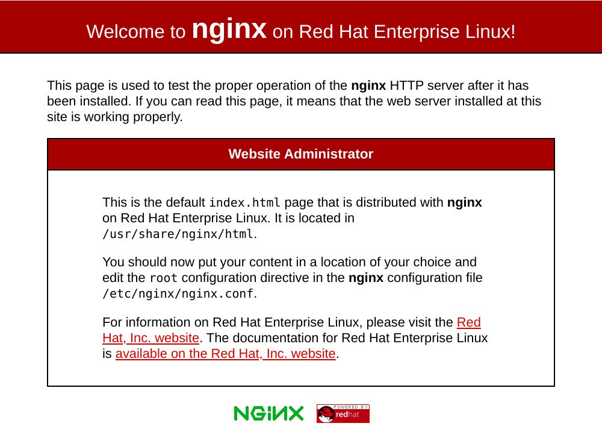

如何在 CentOS 8 上安装 Nginx
•
约 800 字
, 预计阅读时间 4 分钟
Nginx 发音为 “engine x” ，是一种开源的高性能 HTTP 和反向代理服务器，负责处理 Internet 上一些最大站点的负载。它可用作 HTTP 和非 HTTP 服务器的独立 Web 服务器，负载平衡器，内容缓存和反向代理。
与 Apache 相比， Nginx 可以处理大量并发连接，并且每个连接的内存占用量较小。
本教程说明了如何在 CentOS 8 上安装和管理 Nginx 。
先决条件
在继续之前，请确保您以具有 sudo 特权的用户身份登录，并且您没有在端口 80 或 443 上运行 Apache 或任何其他进程。
在 CentOS 8 上安装 Nginx
从 CentOS 8 开始， Nginx 软件包在默认的 CentOS 存储库中可用。
在 CentOS 8 上安装 Nginx 只需输入以下内容即可：
sudo yum install nginx
安装完成后，使用以下命令启用并启动 Nginx 服务：
sudo systemctl enable nginx
sudo systemctl start nginx
要验证服务是否正在运行，请通过以下命令检查其状态：
sudo systemctl status nginx
输出应如下所示：
● nginx.service - The nginx HTTP and reverse proxy server
Loaded: loaded (/usr/lib/systemd/system/nginx.service; enabled; vendor preset: disabled)
Active: active (running) since Sun 2019-10-06 18:35:55 UTC; 17min ago
...
调整防火墙
FirewallD 是 Centos 8 上的默认防火墙解决方案。
在安装过程中， Nginx 使用预定义的规则创建防火墙服务文件，以允许访问 HTTP(80) 和 HTTPS(443) 端口。
使用以下命令永久打开必要的端口：
sudo firewall-cmd --permanent --zone=public --add-service=http
sudo firewall-cmd --permanent --zone=public --add-service=https
sudo firewall-cmd --reload
现在，您可以通过在 Web 浏览器中打开 http://YOUR_IP 来测试 Nginx 的安装。您应该看到默认的 Nginx 欢迎页面，其外观应类似于下图：

Nginx 配置文件的结构和最佳实践
- 所有 Nginx 配置文件都位于
/etc/nginx/目录中。 - Nginx 的主要配置文件是
/etc/nginx/nginx.conf。 - 为每个网站创建一个单独的配置文件使服务器更加易于维护。
- Nginx 服务器文件必须以结尾
.conf并存储在/etc/nginx/conf.d目录中。您可以根据需要拥有任意数量的服务器块。 - 遵循标准命名约定是一个好习惯。例如，如果域名是
mydomain.com则配置文件应命名为mydomain.com.conf - 如果在域服务器块中使用可重复的配置段，则最好将这些段重构为片段。
- Nginx日志文件 (
access.log和error.log) 位于/var/log/nginx/目录中。建议每个服务器模块有不同access和error日志文件。 - 您可以将网站文件的根目录设置为所需的任何位置。 最常见的位置包括：
/home/<user_name>/<site_name>/var/www/<site_name>/var/www/html/<site_name>/opt/<site_name>/usr/share/nginx/html
结论
恭喜，您已经在 CentOS 8 服务器上成功安装了 Nginx 。现在，您已经准备好开始部署应用程序并将 Nginx 用作 Web 或代理服务器。
您可以通过与其他任何 systemd 单元相同的方式来管理 Nginx 服务。